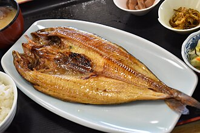

ホッケの漁獲量 都道府県ランキング
全8都道府県の順位と漁獲量
ホッケの漁獲量が全国で最も多いのは北海道で、2万7,714 tです。全国（2万7,868 t）の99%を占めます。

| 順位 | 都道府県 | 漁獲量 | 全国に占める割合 |
|---|---|---|---|
| 1位 | 北海道 | 2万7,714 t | 99% |
| 2位 | 青森県 | 76 t | 0.3% |
| 3位 | 新潟県 | 40 t | 0.1% |
| 4位 | 秋田県 | 17 t | 0.1% |
| 5位 | 山形県 | 10 t | 0.0% |
| 6位 | 石川県 | 7 t | 0.0% |
| 7位 | 岩手県 | 2 t | 0.0% |
| 8位 | 富山県 | 1 t | 0.0% |
ホッケの漁獲量の推移（令和2年〜令和6年）
全国の漁獲量は、令和2年の4万1,052 tから令和6年の2万7,868 tへ、32%減りました。期間中、1位は一貫して北海道です。
| 年 | 全国 | 1位 | 2位 | 3位 |
|---|---|---|---|---|
| 令和6年 | 2万7,868 t | 北海道2万7,714 t | 青森県76 t | 新潟県40 t |
| 令和5年 | 3万1,723 t | 北海道3万1,089 t | 青森県259 t | 石川県174 t |
| 令和4年 | 3万5,283 t | 北海道3万3,692 t | 青森県926 t | 石川県322 t |
| 令和3年 | 4万5,480 t | 北海道4万4,218 t | 青森県587 t | 石川県190 t |
| 令和2年 | 4万1,052 t | 北海道3万9,460 t | 青森県675 t | 秋田県370 t |
この数字について
- 分類：アイナメの仲間
- 全国の漁獲量：2万7,868 t
- この数字が表すもの：漁獲量（海面漁業の漁獲量。養殖は含みません）
- 調査：海面漁業生産統計調査（海面漁業） 令和6年
- 8県分を調査（調査していない県は順位に入りません）
ホッケの漁獲量について、よくある質問
- ホッケの漁獲量が日本一の都道府県はどこですか？
- 北海道です。海面漁業生産統計調査（海面漁業）（令和6年）で2万7,714 tでした。
- ホッケの漁獲量ランキング2位・3位はどこですか？
- 2位は青森県（76 t）、3位は新潟県（40 t）です。
- ホッケの漁獲量ランキング4位・5位はどこですか？
- 4位は秋田県（17 t）、5位は山形県（10 t）です。ホッケの全8県の順位は上の表のとおりです。
- ホッケの全国の漁獲量はどれくらいですか？
- 2万7,868 t（令和6年）です。